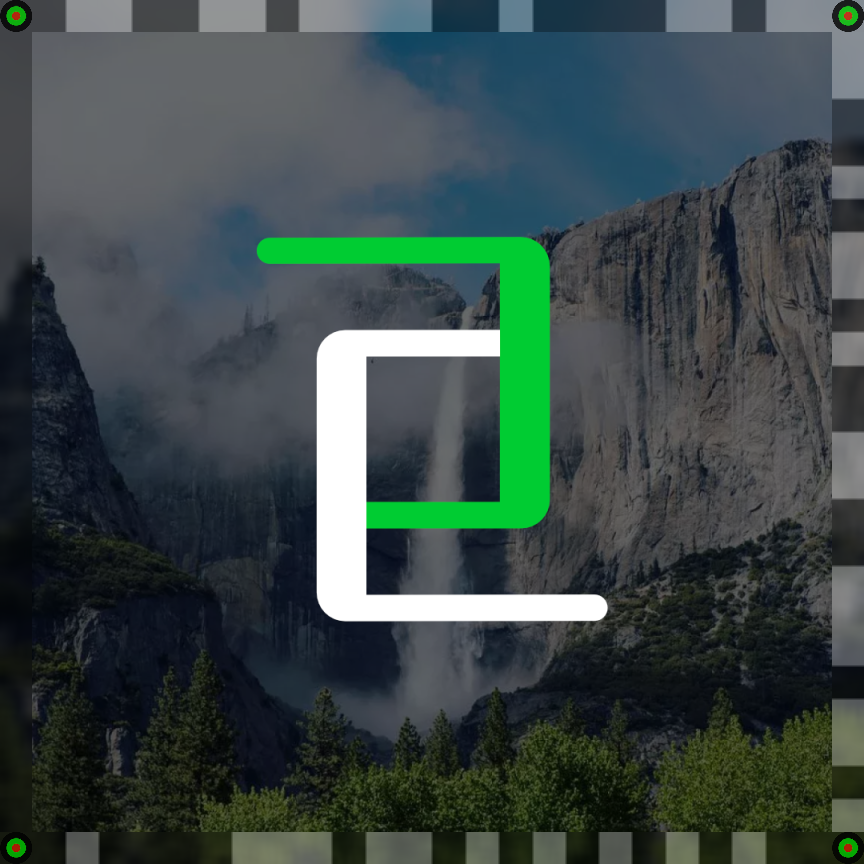
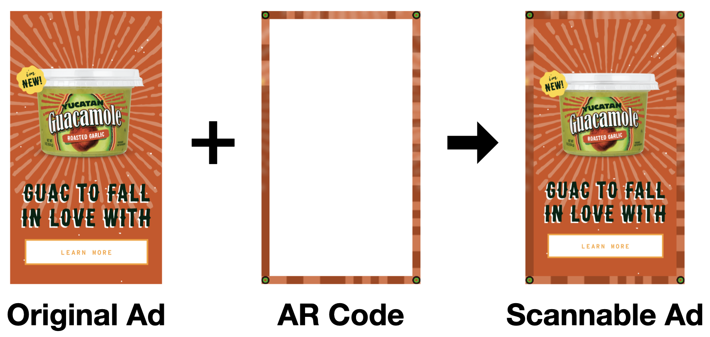

The AR Code by Framedge
Every frame.
A new connection.
Turn images and videos into entry points for augmented reality. Encode a link into your media, then let a camera connect the physical and digital worlds.

WebAR + Native AR experiences + Apple Vision Pro
01 / A different kind of anchor
Your content.
With a digital layer.
Traditional AR anchors rely on a recognizable physical object or a static reference image. Framedge encodes the anchor directly into the edge of an image or video, so the experience can travel with the media.

Encode your media
Add an AR Code to an existing image or video.
Point a camera
Detect and decode the marker from a captured frame.
Open an experience
Connect to your website, content, or AR interaction.
02 / AR on video
Keep the story moving.
AR Codes can be encoded into videos as well as still images. Bring camera interactions to televisions, digital billboards, and other displays, alongside your existing AR technology.
Play either clip to see the original Framedge demonstration. These videos are hosted with this site.
03 / More than a QR Code
An anchor that belongs
in the picture.
Keep the media at the center of the experience.
AR Codes embed a content anchor in the frame itself. They connect existing print or video media with a digital destination, without requiring a separate static reference image for each interaction.
See the Avocado showcase →04 / Build into your experience
A frame in.
An action out.
Integrate detection into a WebAR experience or a mobile application. The Framedge API and SDK approach connects captured camera frames with decoded actions.
Ask about API & SDK access ↗Integration reference
Encode
Add an AR Code to an image or video.
https://api.framedge.comOriginal example image ↗
Encoded example image ↗


Detect and decode
Send a captured image as multipart/form-data with a file field. The reference response describes the action, target URL, scan ID, and short URL.
POST /detect_and_decode
Contact us for current integration access and availability.
import requests
with open("ar_encoded.jpg", "rb") as image:
response = requests.post(
"https://api.framedge.com/detect_and_decode",
files={"file": (
"ar_encoded.jpg", image, "image/jpeg"
)},
)
print(response.text){
"actions": [
["url", "Example Prompt", "http://example.com"]
],
"scan_id": "764c42ae-98d7-43df-8e60-bd76f10486e9",
"short_url": "x6zjin"
}AR Code in practice
See it through
Avocado.
Explore the original Framedge integration for interactive advertising, product discovery, and audience insights.
Explore the showcase ↗